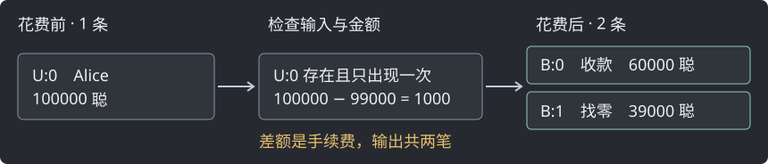

课程总览 / 01
第 03 讲 · UTXO 与最小账本
学习重点
- 概念
- UTXO、outpoint、交易输入与输出、找零、手续费。
- 算法
- 输入查找、重复输入检查、金额检查、UTXO 状态更新。
- 数据结构
- OutPoint、交易输入与输出、Coin、UTXO 集合。
- 掌握目标
- 用简单数组和循环实现最小账本，完成付款并拒绝重复花费。
本课要解决的问题
前两讲已能编码付款信息、签名和验签。签名仍不能说明这笔钱是否存在、是否已经花过。
- 付款引用哪一笔已有资金？
- 怎样判断这笔资金仍然可花？
- 付款后，哪些旧记录删除、哪些新记录产生？
引用旧输出→ 检查输入和金额→ 消耗旧输出→ 创建收款与找零输出
系统位置
本课产出 可执行付款、维护可花资金、拒绝重复花费的最小账本。授权检查在第 04 讲接入。
基础知识 / 02
UTXO 与当前可花资金表
Alice 想付给 Bob 60000 聪。账本中哪几条记录与她有关？
一行是一条未花费的交易输出。U、V、W 是构造的交易 ID 简称，高度也是示意值。Alice、Bob 标记谁能满足条件；链上输出保存脚本。
| 创建交易 txid | 输出序号 vout | 金额（聪） | 花费条件 | 创建高度 | 来自 coinbase |
|---|---|---|---|---|---|
| U | 0 | 100000 | Alice 的花费条件 | 900000 | 否 |
| V | 0 | 20000 | Alice 的花费条件 | 900001 | 否 |
| W | 0 | 8000 | Bob 的花费条件 | 900002 | 否 |
钱包认出两条 Alice 的输出，得到 100000 + 20000 = 120000 聪。节点无需归并人名。花费还要满足授权、coinbase 成熟期等适用条件。
用表格表达当前状态，无须 SQL。 · Core v29.0 · Coin ↗
基础知识 / 03
OutPoint 与联合主键
三条记录的序号都是 0。只给节点一个 0，它该查哪条？
| 创建交易 txid | 输出序号 vout | 合起来读 | 命中的旧输出 |
|---|---|---|---|
| U | 0 | U:0 | 100000 聪 · Alice |
| V | 0 | V:0 | 20000 聪 · Alice |
| W | 0 | W:0 | 8000 聪 · Bob |
txid + vout 整体唯一。vout 从 0 开始，表示输出在创建交易中的位置。移动数组中的记录不会改变它。付款 B 稍后会产生 B:0、B:1，单靠 B 也分不清。
基础知识 / 04
交易 B 的输入表与输出表
Alice 拥有 120000 聪，这笔交易实际引用了多少？
输入 · 只选一条旧输出
| 输入序号 | 引用的创建交易 | 引用的输出序号 | 按键到哪里取值 |
|---|---|---|---|
| 0 | U | 0 | 从 U:0 读取金额和旧花费条件 |
输出 · 钱包填写两笔金额和条件
| 在 B 中的序号 | 金额（聪） | 花费条件 | 钱包对用途的判断 |
|---|---|---|---|
| 0 | 60000 | Bob 的花费条件 | 收款 |
| 1 | 39000 | Alice 的花费条件 | 找零 |
“收款”和“找零”是钱包的用途说明。输出本身只有金额和脚本，输入金额要回到 U:0 查。
基础知识 / 05
交易检查与整笔更新
钱包构造 B 后，节点在哪一步才可以动账？
| 步骤 | 动作 | 本例的结果 |
|---|---|---|
| 1 构造 | 钱包选择输入并填写输出 | 引用 U:0，给 Bob 60000，找零 39000 |
| 2 查找 | 节点同时比较 txid 和 vout | U:0 命中，V:0、W:0 不参与 |
| 3 读取 | 从旧记录取金额与条件 | 100000 聪，须满足 Alice 的花费条件 |
| 4 检查 | 检查存在性、重复引用、金额范围等 | 真实节点还核验授权、成熟期等适用规则 |
| 5 核算 | 输入总额减去输出总额 | 100000 − 99000 = 1000 聪手续费 |
| 6 更新 | 全部检查通过，整笔应用 | 消耗 U:0，新增 B:0、B:1，保留 V:0、W:0 |
| 7 再花费 | Bob 下次引用新收到的 60000 | 填 B:0；重新查 U:0 会失败 |
广播或进入交易池只表示待确认。真实节点连接区块时按顺序应用交易。任一检查失败，保留执行前的状态。
基础知识 / 06
付款前后变化表
假设区块 900003 包含 B。对照两张表，哪一行消耗、哪两行新增？
执行前 · 3 条 − 消耗 U:0
| 创建交易 txid | 输出序号 vout | 金额（聪） | 花费条件 | 创建高度 | 来自 coinbase |
|---|---|---|---|---|---|
| U | 0 | 100000 | Alice 的花费条件 | 900000 | 否 |
| V | 0 | 20000 | Alice 的花费条件 | 900001 | 否 |
| W | 0 | 8000 | Bob 的花费条件 | 900002 | 否 |
执行后 · 4 条 + 新增 B:0、B:1
| 创建交易 txid | 输出序号 vout | 金额（聪） | 花费条件 | 创建高度 | 来自 coinbase |
|---|---|---|---|---|---|
| V | 0 | 20000 | Alice 的花费条件 | 900001 | 否 |
| W | 0 | 8000 | Bob 的花费条件 | 900002 | 否 |
| B | 0 | 60000 | Bob 的花费条件 | 900003 | 否 |
| B | 1 | 39000 | Alice 的花费条件 | 900003 | 否 |
V:0、W:0 原样保留。U:0 再查失败，历史交易 U 仍在区块里。Bob 下次花新收的 60000 聪，应引用 B:0。
B 是普通交易，两个新输出继承所在区块高度，coinbase 标记均为 false。
基础知识 / 07
COutPoint、CTxOut 与 Coin 的真实字段
读 U:0 这一行：哪些字段用于定位，哪些来自交易，哪些由节点补上？
COutPoint（键） → Coin（值） Coin.out 保存 CTxOut。Coin 自身没有 OutPoint，输出自身也不写 txid 和序号。
| 所属对象 | 字段 | 类型 | U:0 的示例值 | 来自哪里 | 用来做什么 |
|---|---|---|---|---|---|
| COutPoint | hash | Txid，32 字节 | U | 创建交易的 txid | 定位哪笔交易 |
| COutPoint | n | uint32_t | 0 | 输出在交易中的位置 | 定位哪条输出 |
| CTxOut | nValue | CAmount，int64_t | 100000 聪 | 创建交易的输出 | 核对可用金额 |
| CTxOut | scriptPubKey | CScript，变长 | Alice 的 P2WPKH 脚本 | 创建交易的输出 | 规定花费条件 |
| Coin | out | CTxOut | 上述金额与脚本 | 创建交易的对应输出 | 验额、取旧条件 |
| Coin | nHeight | uint32_t，31 位域 | 900000 | 包含 U 的区块 | 结合高度检查成熟期等 |
| Coin | fCoinBase | unsigned int，1 位域 | false | U 是否为 coinbase | 判定是否适用成熟期 |
节点保存检查旧输出所需的信息。签名、公钥等授权材料由花费交易按输出类型提供。
基础知识 / 08
P2WPKH 输出的网络序列化
把 U:0 的 100000 聪写成一条真实格式的输出，需要传哪些字节？
| 输出中的字段 | 长度 | 完整字节 |
|---|---|---|
| nValue，小端整数 | 8 字节 | a0 86 01 00 00 00 00 00 |
| scriptPubKey 长度，CompactSize | 1 字节 | 16 |
| scriptPubKey，版本 0 与公钥哈希 | 22 字节 | 00 14 00 01 02 03 04 05 06 07 08 09 0a 0b 0c 0d 0e 0f 10 11 12 13 |
顺序拼接表中三行就是完整构造样本。外层 0x16 数整段脚本的 22 字节；脚本里的 0x14 数接下来的 20 字节公钥哈希。00 是见证版本 0。
钱包从地址生成脚本，公钥哈希是脚本中的数据。这个样本没有对应的链上交易。
网络字节、内存对象与 chainstate 存储
31 字节只计一条网络输出。Core 内存对象另含容器或元数据。chainstate 用另一套键编码和金额、脚本压缩；数据库键中的序号用 VARINT，交易输入中的 OutPoint 用 32 字节标识加固定 4 字节小端序号。
基础知识 / 09
教学结构与 Bitcoin 字段对照
现在要写最小账本，哪些字段要保留，哪些规则留到下一讲？
| 教学字段或结构 | Bitcoin 对应 | 简化原因 | 当前限制 |
|---|---|---|---|
| OutPoint | COutPoint | 保留 32 字节标识与 uint32 序号 | 标识来自教学编码或测试数据 |
| TxOut.amount | CTxOut.nValue | 同样用 int64 整数聪 | 只检查范围与金额关系 |
| TxOut.recipient | CTxOut.scriptPubKey 的教学替身 | 用 1、2 标出 Alice、Bob | 没有脚本与授权检查 |
| Coin { key, output } | COutPoint → Coin.out | 把键和值放进同一数组行 | 与 Core 内存布局不同 |
| 省略高度和 coinbase 标记 | Coin.nHeight、fCoinBase | 暂无区块上下文 | 成熟期等规则留待后续 |
| 固定数组、线性查找 | Core 的 UTXO 视图与缓存 | 能逐行追踪比较 | 容量 4，查询最坏 O(n) |
| 教学 v3 交易编码 | Bitcoin 交易序列化及 txid | 复用前课编码和哈希 | 自定义格式，无法用于广播 |
三条示意记录中，付款只引用 U:0。C++ 用一条旧记录起步，所以程序显示 1 → 2；课堂完整表显示 3 → 4。
基础知识 / 10
交易结构与付款构造
怎样把付款意图组织成一笔交易？
已经确定教学账本保留哪些字段。现在把“花费 U:0，给 Bob 60000 聪，给 Alice 找零 39000 聪”写成一笔交易。
| 付款意图 | 交易中的位置 | 填入的数据 |
|---|---|---|
| 花费一条旧输出 | vin[0].previous | U:0 |
| 给 Bob 付款 | vout[0] | 金额 60000，收款标识 2 |
| 给 Alice 找零 | vout[1] | 金额 39000，收款标识 1 |
| 输入和输出数量 | input_count / output_count | 1 / 2 |
payment 的参数 old 就是 U:0
static Transaction payment(OutPoint old) {
Transaction tx;
tx.input_count = 1;
tx.vin[0].previous = old;
tx.output_count = 2;
tx.vout[0] = {60000, 2};
tx.vout[1] = {39000, 1};
return tx;
}返回的交易描述想花哪条旧记录、想创建哪些新输出。此时还没有修改账本。交易 ID B 给新输出命名：B:0 和 B:1。
查看交易结构体定义
struct OutPoint { Hash256 txid; std::uint32_t index; };
struct TxIn { OutPoint previous; };
struct TxOut { Amount amount; std::uint32_t recipient; };
struct Transaction {
int input_count = 0, output_count = 0;
TxIn vin[MAX_INPUTS]{};
TxOut vout[MAX_OUTPUTS]{};
};
struct Coin { OutPoint key; TxOut output; };交易构造好了，但输入只写了 U:0。节点还不知道它是否存在、里面有多少钱，下一步要查账。
基础知识 / 11
OutPoint 查询与旧输出读取
节点收到交易后，怎样根据输入找到要花费的旧资金？
输入 U:0 → 按 txid 和输出序号查询 → 找到旧输出 → 读取金额与花费条件
| 步骤 | 当前数据 | 执行操作 | 得到什么 |
|---|---|---|---|
| 读取输入 | tx.vin[0].previous | 取出查询键 | U:0 |
| 查找账本 | UTXO 表中的各条记录 | 同时比较完整 txid 和输出序号 | 匹配行的位置 slot |
| 找到记录 | coins[slot].output | 读取旧输出 | 100000 聪、Alice 的教学收款标识 1 |
| 没找到 | slot == -1 | 拒绝交易 | 账本保持不变 |
这段循环实现表中的查找步骤
int Ledger::find(const OutPoint& key) const {
for (int i = 0; i < count; ++i) {
if (same_key(coins[i].key, key)) return i;
}
return -1;
}最坏比较 n 行。slot 是当前数组位置，输出序号是创建交易中的位置。先排除 −1 再访问数组。查询只读；缺失可能意味着从未存在，也可能已经花费。
输入给引用，节点从自己的账本读金额。Bitcoin 还读旧 scriptPubKey；教学用 recipient 代替，第 04 讲接入授权检查。
找到 U:0，说明旧输出存在。但同一笔交易若写两次 U:0，两次单独查询都会成功，下一步要排除重复引用。
基础知识 / 12
重复输入检查
如果两行输入都指向 U:0，两次查询都会命中。为何仍须拒绝？
正常输入 [U:0]：累计 100000。若误写成 [U:0, U:0]，读第二项时会再次命中同一条旧输出。与第一项比对发现重复，立即拒绝，账本仍是原来的三条记录。
for (int i = 0; i < tx.input_count; ++i) {
const OutPoint& key = tx.vin[i].previous;
for (int j = 0; j < i; ++j) {
if (same_key(tx.vin[j].previous, key)) return {"duplicate input", 0, {}};
}
int slot = find(key);
if (slot < 0) return {"missing or spent", 0, {}};
if (!add_amount(incoming, coins[slot].output.amount)) return {"input range", 0, {}};
}每个输入只与此前的输入比较。前缀保持唯一，才可以把旧币金额加进 incoming。比较 O(i²)，查找 O(in)，额外空间 O(1)。
基础知识 / 13
找零、金额范围与手续费
节点看到两条同类输出。它如何算费用，又如何避免累计溢出？
把给 Bob 的金额改为 62000，找零仍为 39000，输出合计 101000。Alice 虽有 120000，但这笔交易只引用 100000，仍差 1000，必须拒绝。
static bool add_amount(Amount& total, Amount value) {
if (value < 0 || value > teaching::MAX_MONEY - total) return false;
total += value;
return true;
}两侧分别从零累加，余量够才加。输入须覆盖输出；差额就是费用，本交易没有第三个矿工输出。累计 O(i+o)，额外空间 O(1)。
基础知识 / 14
UTXO 状态更新
通过哪些检查之后，才可以删除第一条旧记录？
下图只画本次付款涉及的输出。Alice 的 V:0（20000 聪）和 Bob 的 W:0（8000 聪）从头到尾保留，因此完整集合由 3 条变为 4 条。

检查 旧键唯一且可用
100000 − 99000 = 1000 聪费用
花费后 B:0 收款 60000 聪
B:1 找零 39000 聪
在单线程内先完整检查，再删除、追加。失败沿用原账本。总耗时 O(i² + (i+o)n + L)，临时编码 O(L)。
基础知识 / 15
UTXO 状态转移演示
连续两次提交同一笔付款，第二次会留下哪些记录？
找零固定为 39000 聪。试填 62000，再改回 60000 连续提交两次。
恢复后可从三条原始记录再试一次。C++ 实验只放入本次用到的 U:0，便于逐行核对检查结果。
拓展理解 / 16
Bitcoin 的 UTXO 模型与 Ethereum 的账户模型
单独取出本次使用的 100000，暂忽略两条未参与输出和费用。Alice 有 100000 单位，付给 Bob 60000。剩余的 40000 记在哪里？
Bitcoin · 输出
付款前
↓ 整笔消耗 U:0
B:1 Alice 40000
Ethereum · 账户
付款前
Bob 0
↓ 从 Alice 账户发送，携带 nonce 7
Bob 60000
左边新增找零键 B:1。右边保留原账户，只收款的 Bob 不增加发送序号。两边使用同一教学单位。
拓展理解 / 17
钱包、交易池与活动链 UTXO 集合
恢复主课的 1000 聪费用。钱包已经显示“待确认”，节点何时才会从活动链视图移除 U:0？
| 观察位置 | 看到的记录 | 这时能下什么结论？ |
|---|---|---|
| Alice 的钱包 | U:0 100000 聪 | 同步时匹配自己跟踪的输出脚本，并跟踪后续花费；可用余额还取决于确认等条件。 |
| 构造交易 B | 输入 U:0 → Bob 60000 + 找零 39000 | 输入点名 txid + vout。每个输出保存金额和花费条件，地址帮助钱包生成条件。 |
| 节点的交易池 | B 待确认；活动链仍有 U:0 | 查旧币、验授权、验金额及时间等规则，再检查本地接纳策略。广播本身不改变链状态。 |
| 活动链连接区块 | 删除 U:0 → 加入 B:0、B:1 | 按块内顺序更新；历史保留 U 与 B。重组时撤销旧分支，再执行新分支。 |
查表解决给定分支上的重复花费。不同有效分支各花一次 U:0 时，节点还要依据累计工作量选择活动链。
Core v29.0 · UpdateCoins / DisconnectBlock ↗ · Bitcoin 开发指南 · 区块链
拓展理解 / 18
显式输入、选币与找零
同样显示 100000 聪，一笔大收入和十笔小收入付起款来有什么区别？
验证者看到的依赖
- 键唯一 → 可查明是哪笔旧币。两笔候选交易点名同一键，冲突立即可见。
- 输入取旧值、输出写新值 → 核对去重与金额范围后，可直接算差额。
- 无共同输入 → 部分检查可并行；若子交易引用父输出，状态更新仍有先后。
钱包与节点承担的成本
- 选哪几笔、找零多少？同费率下，同类小币合并通常增加虚拟大小与费用。
- 分开收款可分别管理资金；合并输入或识别找零，也可能暴露关联。
- 未花小币积累会占用存储与缓存。Core 的 dust 门槛属于转发策略，钱包还须按实际费率判断值不值得花。
若两人都要改同一个状态输出，两次更新会争用同一键。合约可以围绕输出设计，但必须处理后继状态与更新顺序。
拓展理解 / 19
账户 nonce 与合约持久状态
Alice 的旧签名还能验证。账户怎样拒绝第二次扣款？同一份合约被两人调用，又会怎样？
付款与重放
下一笔须匹配 8。普通 ETH 转账另按已用 gas × 有效单价付费，基础费销毁，优先费归区块提议者。Bitcoin 的费用取输入与输出差额。
同一地址的售票合约
账户记录余额、nonce、代码哈希和存储根。两次调用共享持久存储，须处理读写依赖；持续新增记录也会扩大状态。
账户模型规定怎样更新记录，PoS 负责就链的历史达成共识。
展开八项模型对照
| 对照项 | Bitcoin 的 UTXO 模型 | Ethereum 的账户模型 |
|---|---|---|
| 资金表示 | 一组带金额、花费条件的未花输出 | 地址对应账户，账户保存余额 |
| 付款引用 | 输入逐笔点名 txid + vout | 签名确定发送者，交易给出目的地址、金额、发送 nonce |
| 状态更新 | 消耗旧输出，创建收款与找零输出 | 普通转账更新双方余额和发送者 nonce |
| 余额计算 | 钱包筛出自己可用的输出并求和 | 可在指定链状态直接读取账户的原生 ETH 余额 |
| 重复花费／重放检查 | 同笔输入唯一，所引输出仍可用 | 交易 nonce 须匹配该发送者的当前 nonce |
| 费用相关因素 | 差额定费用；费率与虚拟大小影响构造 | 执行消耗 gas，按有效 gas 单价结算 |
| 合约状态表达 | 消费旧输出、通过条件约束状态变更，受脚本能力限制 | 合约地址、代码及持续可读写的存储 |
| 并行处理约束 | 检查输入冲突、父子依赖，保证应用顺序正确 | 同一发送者有序；共享账户或合约存储也可能冲突 |
课堂讨论 · 用上述付款解释五个问题
- 签名正确，为什么交易仍可能无效？
- 钱包显示余额足够，为什么付款费用可能很高？
- 两笔交易分别花不同 UTXO，是否就一定可以完全并行？
- 为什么账户模型也要防止同一笔付款重复执行？
- 哪种模型更适合本课的简单系统？你愿意承担哪项代价？
实验尝试 / 20
初始测试账本与付款构造
如何从 BEFORE 中的 U:0 构造一入两出的交易？从本讲目录运行下列命令。
bash ../../code/lesson-03/run.shLedger book = Ledger::fixture();
Coin old{};
require(book.read(0, old) && book.find(old.key) == 0, "fixture lookup");
std::cout << "BEFORE\n";
print_book(book);
Transaction tx = payment(old.key);- C++17、Bash、pkg-config、OpenSSL 3。脚本编译并运行。
- 初始记录由 fixture 建立，非创世输出。read 拷贝一行，find 核对旧键。
- 先预测两条新记录的序号，再读 AFTER。
查看教学代码怎样算出 B（v3 编码）
整数小端，输出先写 8 字节金额，再写 4 字节收款标识。这是教学交易格式；Bitcoin 使用自己的交易序列化。对完整字节做双 SHA-256，时间和缓冲均为 O(L)。不能直接哈希含空槽和填充的结构体。v1 草稿和 02A 签名示例都缺旧输出引用。
实验尝试 / 21
Ledger::apply 与状态更新
为什么不能把一次预检回执当作以后修改账本的凭证？
Result Ledger::apply(const Transaction& tx) {
Result result = check(tx); // 对当前账本、当前交易检查，不接受外部的检查回执
if (result.error) return result;
// 从此处开始只有定长对象赋值，无分配或可失败的库调用。
for (int i = 0; i < tx.input_count; ++i) remove(tx.vin[i].previous);
for (int i = 0; i < tx.output_count; ++i) {
OutPoint key{result.txid, static_cast<std::uint32_t>(i)};
coins[count++] = {key, tx.vout[i]};
}
return result;
}apply 重查当前交易与账本。删除时按键重新定位，避免末行搬移后使用旧槽位。写入阶段没有分配或哈希调用。
实验尝试 / 22
输出键与交易重放
两条新记录如何区分？再次提交同一笔交易时，还能找到旧键吗？
BEFORE
0100000000000000000000000000000000000000000000000000000000000000:0 owner=1 sat=100000
ACCEPT fee=1000
AFTER
096003dcc53f5853d941f4cb9ff51934b988bec1d4670b9e3a1e40bfa623ecc7:0 owner=2 sat=60000
096003dcc53f5853d941f4cb9ff51934b988bec1d4670b9e3a1e40bfa623ecc7:1 owner=1 sat=39000
replay -> missing or spent | unchanged第二次提交给出 missing or spent。两条新输出逐字段保持原值。
实验尝试 / 23
失败实验与授权边界
哪一种修改可以通过全部金额规则？
same input twice -> duplicate input | unchanged
second input missing -> missing or spent | unchanged
edit after successful preview -> overspend | unchanged
negative second output -> output range | unchanged
above limit -> output range | unchanged
running sum above limit -> output range | unchanged
would overflow int64 -> output range | unchanged
capacity -> ledger full | unchanged
recipient-only edit -> ACCEPT | authorization unchecked数量 −1、0、5 在访问数组前被拒绝。每次拒绝都核对行数、顺序、完整键、金额和收款标识。改收款人仍满足金额规则，必须在后续检查授权。
实验尝试 / 24
线性查找的代价与系统接入
查首行、末行和缺失键各要比较几次？下一讲在哪里接入授权检查？
- 余额求和要扫描全部 n 行，时间 O(n)，游标与累计值占 O(1) 额外空间。
- 平衡树查找 O(log n)，哈希表平均 O(1)、最坏 O(n)，需要额外索引。固定数组占 O(C)，本课容量 C=4。
- 查 n 行最多比较 n 次。调整数组容量后重新对照 sizeof 与 63 字节线格式。
- sizeof(Transaction)=216 sizeof(Coin)=56 sizeof(Ledger)=232
- time ../../code/build/lesson-03/lab03 会计入启动与输出时间。
- W5 提供 vin/vout；N8 维护 OutPoint → Coin。
- 第 04 讲在提交前核对旧输出花费条件与授权。
- 脚本、交易池、区块与网络在后续课程接入。